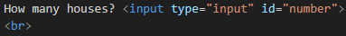
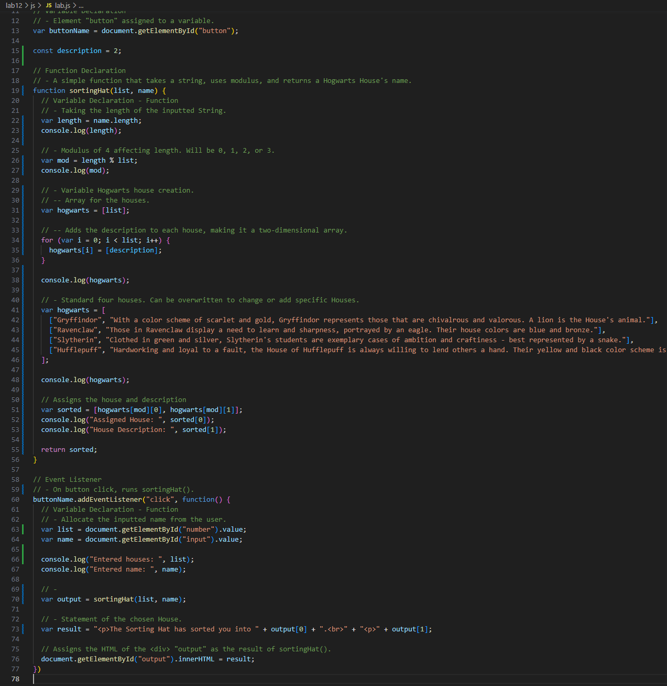
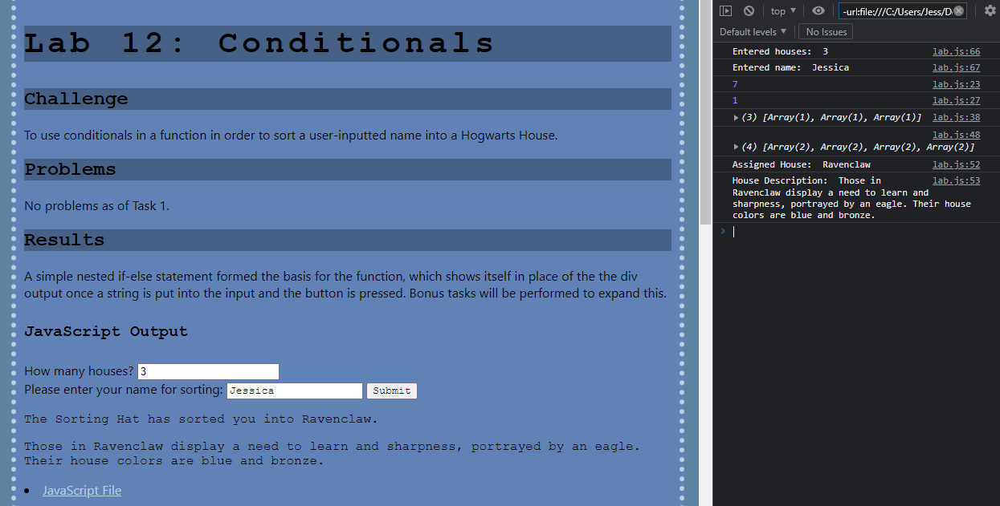

Lab 14: Debugging Tools & Strategies
Challenge
To back through a previous lab and debug it, utilizing the console and current knowledge about HTML, CSS, and JavaScript.
Problems
Debugging was required through the process of adding or changing new code. It was all eventually fixed.
Results
Lab 12's Task X questions 2 and 3 were added on to that lab, which was debugged throughout the process.
Debugging
  So, there wasn't exactly a problem with the lab, per say, rather I wanted to do two more parts of Lab 12's Task X. Herein, the code not only allow for customization of the number of houses with descriptions, adding onto the the first part of the bonus task, but also to refractors it to no longer include conditionals, through the use of changing the function and utilizing 2D arrays, something that I was able to carry over from my experience in Java.